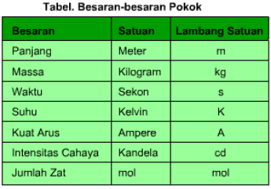
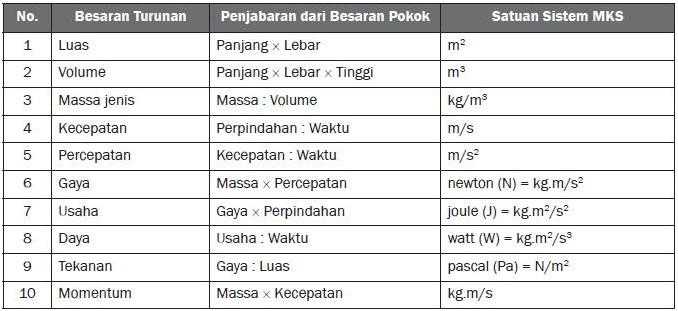

Bab 1 Objek IPA dan Pengamatannya
A. Penyelidikan IPA
IPA adalah ilmu yang mempelajari segala sesutu yang berada di sekitar kita baik yang hidup maupun yang mati. Di dalam menemukan konsep-konsep IPA, maka para ilmuwan melakukan kegiatan penyelidikan yang disebut observasi (pengamatan). IPA berkembang melalui proses penelitian yang dilakukan oleh ilmuwan. Penelitian yang dilakukan ilmuwan harus melalui langkah-langkah yang terencana dan sistematis untuk memperoleh informasi yang dapat dipertanggungjawabkan secara ilmiah. Langkah-langkah yang harus dilakukan dalam melakukan penelitian tersebut dinamakan metode ilmiah. Metode ilmiah merupakan proses keilmuan untuk mendapatkan pengetahuan (dari pemecahan masalah dan mengetahui penyebabnya) secara sistematis sehingga dapat diperoleh simpulan yang dapat dipercaya (valid).
Bagian-bagian IPA
Ilmu Pengetahuan Alam (IPA) dikelompokkan menjadi empat bagian sebagai berikut.
- Fisika
Fisika adalah ilmu yang mempelajari tentang aspek mendasar alam, seperti materi, energi, cahaya, gerak panas dan berbagai gejala fisik alam lainnya.
- Kimia
Kimia adalah ilmu yang mempelajari segala sesuatu mengenai materi dan perubahannya serta interaksi antar materi yang satu dengan materi yang lain.
- Biologi
Biologi adalah cabang IPA yang mempelajari sistem kehidupan mulai dari ukuran yang kecil sampai dengan lingkungan yang sangat luas.
- Ilmu bumi dan Antariksa
Ilmu Bumi dan Antariksa merupakan cabang IPA yang mempelajari tentang asal mula bumi, perkebangan dan keadaannya saat ini, bintang, planet dan berbagai benda langit lainnya.
B. Pengukuran sebagai bagian dari pengamatan
Pengukuran dapat diartikan sebagai kegiatan mengukur suatu besaran dari objek atau benda. Pengertian pengukuran tersebut menunjukkan bahwa dalam kegiatan mengukur dibutuhkan alat ukur yang sesuai dengan besarannya. Sedangkan mengukur adalah membandingkan nilai besaran yang diukur dengan alat ukur yang sesuai, misalnya mengukur lebar meja dengan mistar, mengukur kecepatan lari dengan stopwacth, atau mengukur massa benda dengan neraca. Besaran merupakan segala sesuatu yang dapat diukur dan dinyatakan dengan nilai dan satuan. Satuan adalah pembanding dalam sebuah pengukuran. Di dalam melakukan kegiatan pengukuran terhadap suatu benda, yang terpenting adalah menggunakan alat ukur yang sesuai dan standar. Syarat pengukuran tersebut harus dipenuhi untuk mendapatkan nilai ukur yang tepat. Pengukuran yang teliti akan menghasilkan nilai yang akurat. Semakin tinggi tingkat ketelitian sebuah alat ukur, maka nilai pengukuran semakin baik.
| Besaran Pokok | Besaran Turunan |
|---|---|
|  |  |